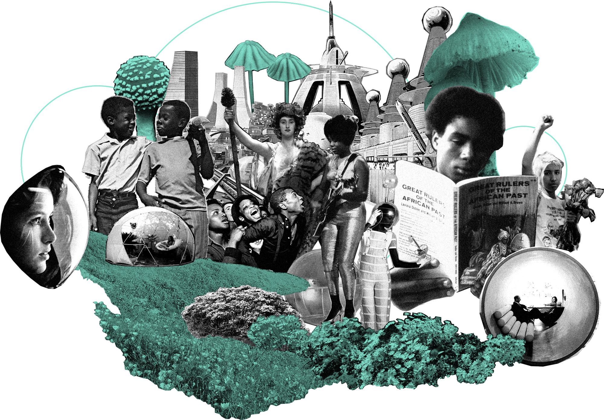
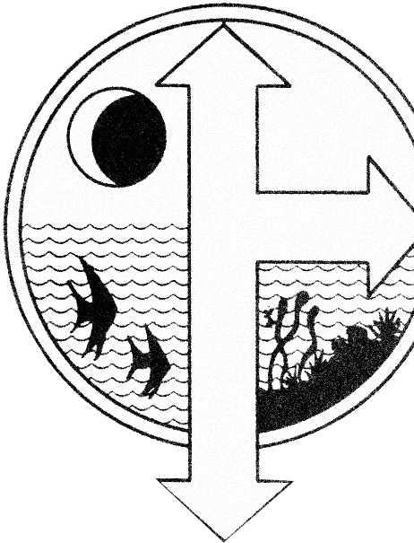

Environmental
Justice

A Beautiful, Verdant Future
The climate crisis is one of the most existential threats to life on earth, one that communities must organize in order to reverse, to seek out a future existence more closely in harmony with the natural world.
There are two main ways to live in harmony with the earth: protect, conserve, and restore natural resources. Saving the earth needs individuals and groups of people to care for the environment.
…we already have the tools to do the things we need to do as far as resources and technology go… — Jason Killinger
…collective input, like actually listening to scientists and taking their advice into consideration, and sharing knowledge in order for people to plan for the future in an ideal world. Scientists of the world are good communicators between one another, but they’re not in our everyday life enough. Scientific reports are not easy to read and understand. I believe it’s necessary for the scientific community to communicate with the public more often instead of politicians or other scientists… — Valerie Frolova
…travel should become more localized. Don’t dream about the other place so hard and try to get there. Start by exploring your own city or town… — Valerie Frolova
…in the future, people will see the ability to have space and time for this way of having relationships with plants and land… — Lara Durback
…there would probably be fishing in the river and oyster farms. That’s what this land looked like before. If we were to decolonize it, that’s what would happen… — Nicole Rodill
…Great Plains tribes designed our tribes to keep the buffalo alive and keep the prairie alive, just like the southwest tribes were designed to take care of the Grand Canyon, or along the coasts they designed their tribes to protect the water, the ocean, the mountains, you name it. There’s so much design that could be used in community-building that comes from tribal knowledge… — Sadie Red Wing
…we need farmers, physicians, shamans… I don’t know if there are individuals who could fill both roles (physician & shaman) — that would be the idealized psychiatrist (which in Greek translates to ‘healing of the soul’). There will still be a need for western, allopathic/osteopathic medicine to address acute health conditions, but I think the approach to chronic illness will rely on complementary and alternative healing modalities. And in a utopian society many of the environmental conditions that result in chronic illness will be eliminated entirely. Preventative medicine at it’s best. The shaman will also fulfill the spiritual needs of the community. A society that communes with nature is more inclined toward the numinous… — Dr. Kimia Pourrezaei
…if we knew the farmers that grew our food, or if we knew the people who were making the goods like clothing that we had in our lives, we would be able to re-establish our relationships to the material objects of our lives, other people and other forms of life involved in the production of those material goods. That re-establishment would fan out in every direction. Where food comes from, not only our connection to the seed it came from and the land it was grown on, but also the person who was involved in cultivating it, their intentions, and how it gets to us… — Jason Killinger
…even if we are taking all of the measurements to keep our climate somewhat stable, farmers who practice regenerative agriculture will be essential to help us grow enough food. We can’t continue to produce food using techniques of industrial agriculture. We need a more holistic approach… — Valerie Frolova
…I hope that architects and engineers will push towards truly sustainable building design, unfortunately LEED certification only scratches the surface. Designing a better, just, safe and sustainable environment costs significantly more than what most people are willing to spend. I hope to see new buildings designed in a way that allows for natural ventilation and controlled daylight. In other words, I hope to never see another glass and steel tower which is expensive to cool and heat among other problems… — Valerie Frolova
…when you talk about the next Seventh Generation, that conversation of what our expectations are of them actually starts today, because we have to pass on that story to them, generation by generation. We want a full, peaceful utopia. We have to instill in them right now what that looks like. It doesn’t have to be occurring right now, but we have to be instilling in them that the next Seventh Generation, the Fourteenth Generation, would have a full utopia. It would be super clean air, clean water, full community, I would hope there wasn’t even money. I would just not want money to exist at that point… — Nicole Rodill
…our main goal is to transition away from a fossil fuel-dependent economy… — Valerie Frolova
…if we learn how to have a relationship with even a very small natural area, our potential to learn is huge. I’d love to make space for others to go where they can have contemplative life experiences, or just be able to relate to the earth in some ways… — Lara Durback
…my idea of a utopian world is really about the land, a respect for the land and Mother Earth. I always say that the ocean and the mountains are my church and so that would be your recreation. It’s a sacred space, it’s a sacred endeavor, but it’s your recreation to go enjoy it and connect to the land in that way. In an ideal world, Indigenous people would take back the National Parks. All money given to the National Parks would go back to Indigenous peoples. They are the original caretakers of those spaces. They 1010% should be given the land back and take care of it. Everyone in the fucking park should be brown. Everyone who’s a Park Ranger should be brown, because it’s their fucking land. If we want to see a future where we respect that and where in my vision of the future the outdoors is where we recreate, it should be sacred in an Indigenous way… — Nicole Rodill
…people should take advantage of local attractions, enjoy some time in nature appreciating the beauty of the natural world… — Valerie Frolova
…I want (my student) to select a snack, like corn nuts, and I want them to look on the label and I want them to see where that corn came from, the tradition. Pueblos, in New Mexico, used to eat snacks like corn nuts. Why don’t brands put the origins of where some of this food comes from on their labels? Why can’t they see which tribe in the United States harvested this? Where does this snack really come from?… I want them to go get strawberries and I want them to know that the northeastern tribes, the Six Nations, harvested those strawberries. It’s the perfect opportunity for grocery stores to share trade route maps. After they select a vegetable, they see that this tribe harvested squash during this season from Arizona or New Mexico, and I want them to pick up a spice and see where that spice came from, and get an idea that before cars or even before horses when we would take canoes along rivers, they would be like our interstates… — Sadie Red Wing
…another characteristic of technological advancement is the end of externalities. Whatever systems we are in, it will be recognized that externality is an illusion. I keep going back to this idea that utopia is not about specific political factors, but it needs to be internalized. We have divorced ourselves from the rest of the natural world. The rest of the living world operates as if everything was connected in that way, supporting itself and giving itself gifts. Generally, organisms that don’t do that go extinct… — Jason Killinger
Next: Start a Community Garden

